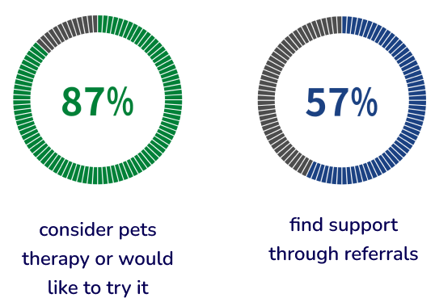
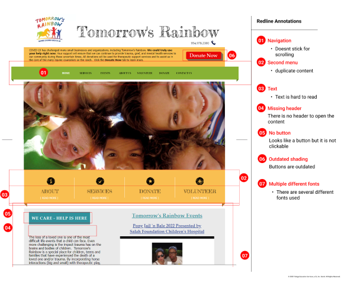
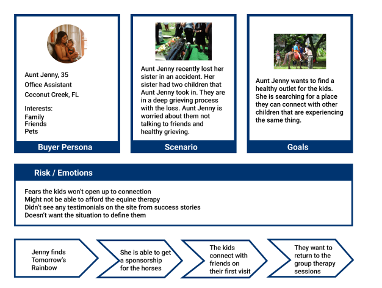
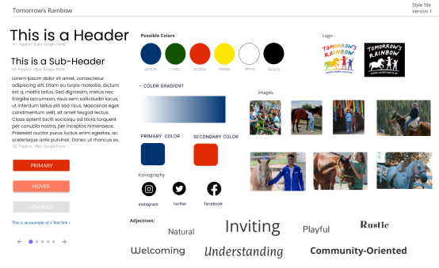
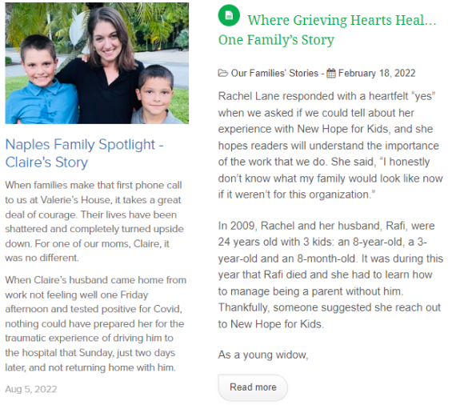
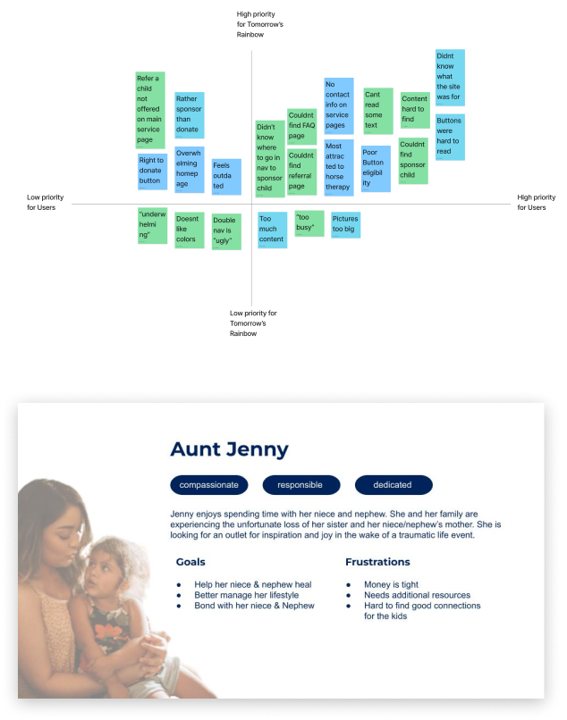
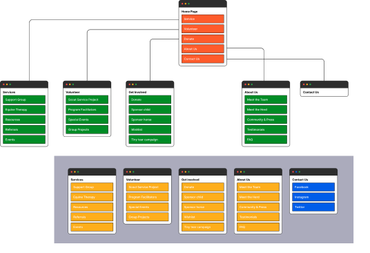
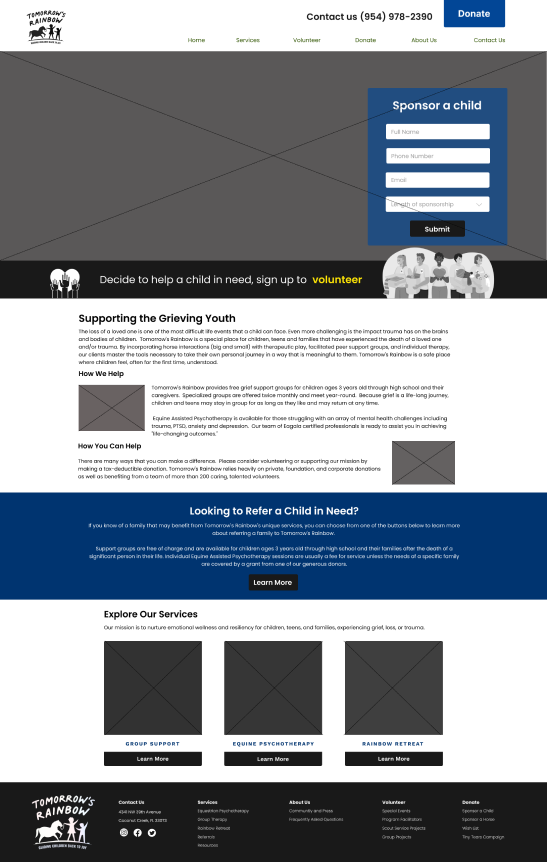
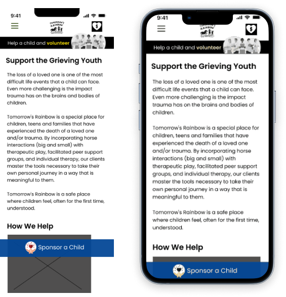
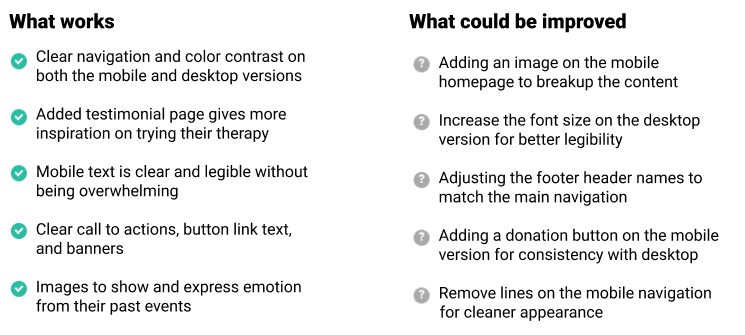

Tomorrow's Rainbow
Case Study
Tomorrow’s Rainbow was completed in 2022. My involvement was spearheading the research and redesign.
The project was conducted over a three week time span with 3 team members.
UI/UX Designer






Overview
Tomorrow’s Rainbow is a non-profit organization local to Coconut Creek, FL. Their mission is to help grieving children through group support, equine assisted therapy, and community activities. Their current website lacks optimal UX UI standards and causes a lack of traction and overall conversions.
My Process
Research
We arranged five interviews with users to understand how they navigate the website, if it's user friendly, and what therapies or resources on the site they are drawn to. We tested navigation functionality, page readability, and problems with user experience.
57 people were surveyed to conclude interest in animal therapy, how the majority handles the grieving process, and how they search for help.

Competitor Analysis
A competitor analysis was completed to further understand their differentiators, pain points, threats, and growth opportunities.
- Competitors offered heartfelt testimonial pages to draw in clients and donations. We marked this as a key element to consider in the design process.
- The competitors offer group support but don't have unique therapy like the equine assisted. We wanted to be sure this was a highlight in Tomorrow's design,
Site Evaluation
Redlining was conducted to incorporate components from user interviews and a UX perspective.
The current user flow was documented and highlighted areas for improvement.
- homepage
- About us
- Services
- Equine Therapy
- Contact us

Research Analysis
Through the data we collected, we found:
- 100% of the users had trouble finding the referral a child page. Through our survey data 57% seek referrals when needing help, this pointed to an opportunity for design correction.
- 75% of users didn't to look under the donate navigation tab to sponsor a child.
- Most users were attracted to the equine page but didn't know how to sign up
- Content layout and button links were confusing and hard to read.
We broke up the additional website pain points into an affinity diagram to target key improvement opportunities and critical flaws.
3 user personas were formulated to emphasize the 3 separate target markets based on user interviews. A direct persona in need of their service, an indirect persona that submits referrals, and a sponsor who provides donations.
Ideation
We colloborated and brainstormed to define an empathy map, storyboarding, user journey map, and scenario. This brainstorming session allowed us to find additional pain points or roadblocks a user might face. From this session we discovered:
- The hesitation in fees for the equine assisted therapy users are most attracted to
- Wary of lack of any testimonials on the site
This opened the idea to include information on the fees and affordablilty on the site, how to apply for a sponsorship, and if any are available.
We further broke down data from our research and brainstorming sessions to formulate must, haves, could haves, and should haves for the site.

Site Map
We card sorted the web pages to organize the best breakdown of the navigation and developed the final result into a site map.
Changes made:
- Combined about us mission statement page to be on the main about page
- Included a testimonials page
- Updated the donate navigation to Get Involved
- Combined the meet the staff & meet the board
- Put events page under services
Style Tile
A style guide was implemented to incorporate colors of the rainbow, without becoming too overpowering, to focus on the brand values and company mission.

Wireframing & Lo-Fi
We built wireframes to ensure the helping hand options are readily available, to include refer a child section, a volunteer banner, and a eye catching donate button. We created and tested lo-fi designs to test user experience.

Hi-Fi Prototype & Testing
Our high fidelity designs were tested to confirm seamless transitions to the correct pages, clear call to actions, and overall appeal.
- Through imagery and call to actions we strived to convey not only the resources available but how you can help the cause.
- We included a highlighted sponsor a child call to action in the hero space, a volunteer banner, and a captivating photo of a girl connecting with a horse to highlight their prized service.
- Updated the donate navigation to Get Involved
- During user testing no one was able to find the refer a child page. From our survey data we concluded that referrals are a leading source and wanted this to be easily accessible.
- The services page offers an introduction to the service, easy navigation links to the pages, and thumbnails of real life experiences.
- The original design of the equine page was missing a call to action for signing up for their therapy. We wanted to ensure this was available and easy for users.
- We broke up the about us page to put the missions and vision on the main page to reduce pages in the navigation.

Design Review & Iteration
We completed additional user testing to confirm design flaws, and explore what works & what needs to be adjusted or improved.

Contact Information
I look forward to the opportunity to connect and discuss your project needs and
company goals.